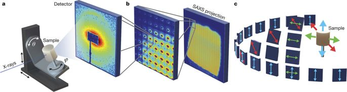
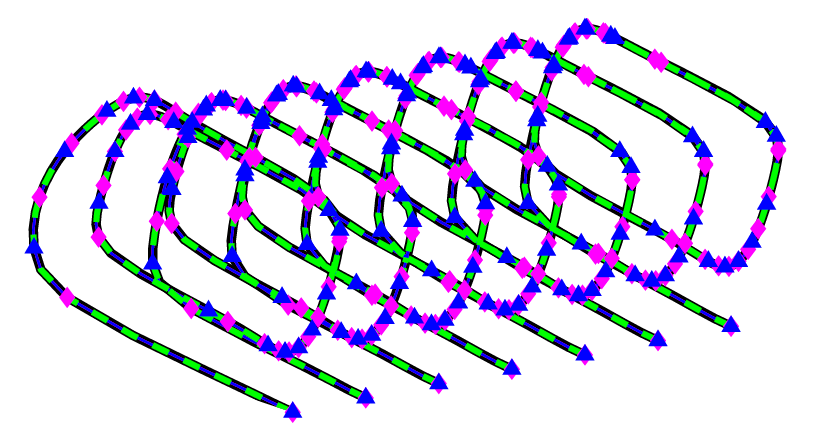
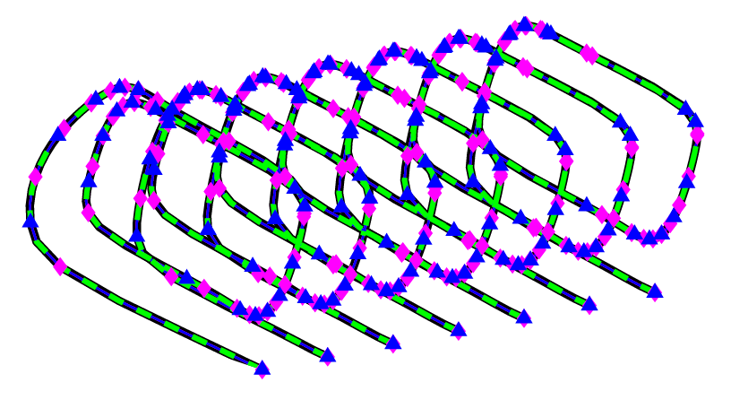
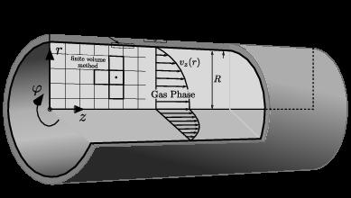

Research Interests
- Data-driven modeling and system identification
- Low-order approximation of high-dimensional dynamical systems
- Application of deep learning in dynamical systems
- 3D image reconstruction and recovery
Current Research Projects
3D image reconstruction using SAXS measurements
Imaging tools such as X-ray spectroscopy or scattering play a vital role in gathering important material information for example structure, elasticity, porosity. We particularly focus on small angle X-ray scattering (SAXS) tomography, aiming at determining a complete 3D SAXS pattern for each pixel of the scanned plane. Typically, the number of SAXS frames to be taken for one tomographic reconstruction is in the order of more than one million. Considering that one SAXS frame has a size of several megabytes, the amount of data for one tomographic reconstruction is in the order of terabytes [more details].
In this project, our main goal is to reduce the number of experiments since more experiments impose a huge economic burden. Furthermore, we aim at utilizing various image reconstruction techniques, combined with regularization and some additional information gathered at the experimental set-up. Thus, we can reconstruct an image, allowing us to extract important features about the material at the lower both economic and computation expenses.
Data-driven and reduced-order and modeling
 

Mathematical modeling is one of the fundamental tools to study a dynamical system. In this discipline, my focus lies on a) data-driven modeling using either time-domain measurements or frequency-domain measurements, b) reduced-order modeling of large-scale dynamical systems. Due to ever increasing the complexity of the process, the resulting models are complex and large-scale. Hence, simpler reduced-order modeling is a key to build a computational cheaper and simple surrogate models for large-scale complex systems. I have significantly work on reduced-order modeling for nonlinear large-scale dynamical systems, inspired by system theory such as interpolation and balanced truncation.

My immediate focus in this area is data-driven modeling, by utilizing tools from various different fields from sparse recovery and look at the data-driven modeling from a different perspective. Furthermore, I am particularly interested in the real-world application of reduced-order and data-driven modeling. To that end, we have successfully concluded an application of reduced-order modeling for nonlinear catalytic reactors and gained a significant speed-up in the simulations [more details].